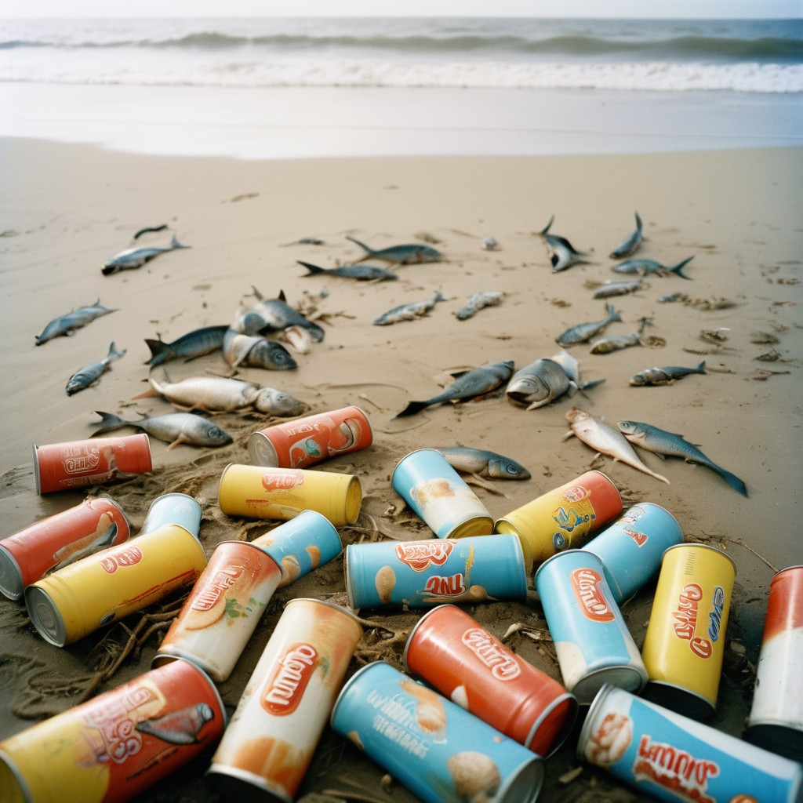
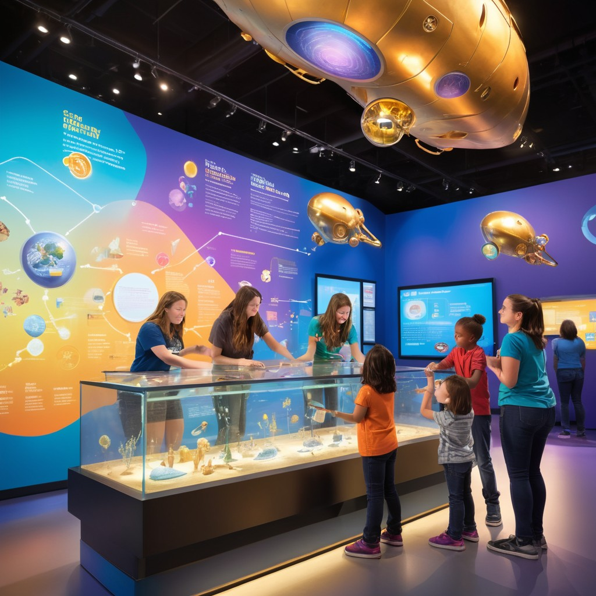
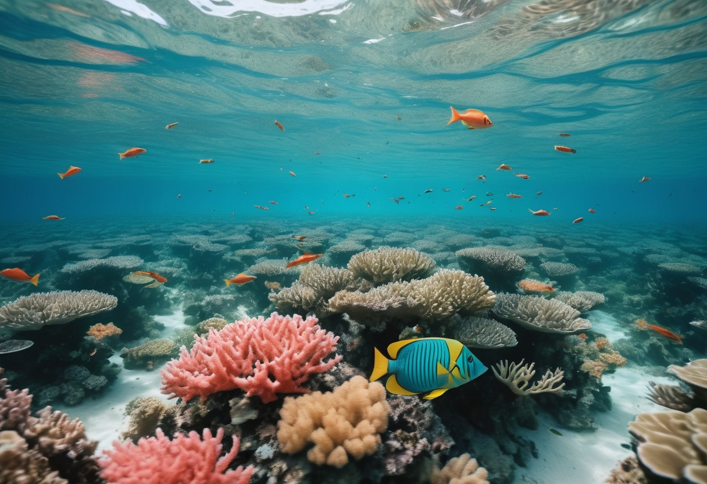

O que é
Ocean Guardian?
Nossa missão é proteger e preservar os oceanos do mundo, combatendo a poluição marinha e promovendo a sustentabilidade ambiental para as futuras gerações.


Ocean Guardian é uma empresa dedicada à resolução de problemas ambientais no oceano, com foco principal na limpeza e remoção de resíduos marinhos. Entendemos a importância dos oceanos para a biodiversidade e para o bem-estar do planeta, e trabalhamos incansavelmente para mitigar os impactos negativos das atividades humanas sobre esses ecossistemas vitais.
Em 2024 a empresa OCEANS 20 (O20), fez um desafio para os alunos da FIAP, então dois amigos, Arthur e Felipe, gostaram da ideia do desafio e criaram a Ocean Guardian, então logo surgiu da paixão de dois estudantes de engenharia de software determinados a enfrentar a crescente crise de poluição nos oceanos. O planejamento seria estudar os problemas passados e atuais para analisar e amenizar os problemas futuros.
Os oceanos enfrentam desafios críticos que afetam tanto os ecossistemas marinhos quanto a economia global.

Média de Poluição por Plástico.
Média da Temperatura da Água.
Média dos Níveis de Oxigênio.
O Aqua Sentinel é um sensores de detecção de lixo na água. Esses sensores seriam implantados em corpos d’água, como rios, lagos e oceanos, para monitorar a presença de resíduos e alertar sobre a poluição. Aqui estão os detalhes:
• Os sensores utilizariam tecnologia de sensoriamento remoto.
• Eles captariam radiação eletromagnética refletida ou emitida pelos objetos na água, incluindo plásticos e outros detritos.
• Sem contato direto com a água, esses sensores seriam instalados em boias flutuantes ou dispositivos submersíveis.
• Cada tipo de material (plástico, vidro, metal etc.) tem uma assinatura espectral única.
• Os sensores analisariam essa assinatura para identificar a presença de lixo na água.
• Algoritmos de aprendizado de máquina seriam usados para classificar os materiais detectados.
• Os sensores transmitiriam dados para uma central de controle via tecnologia sem fio (como redes celulares ou satélites).
• Quando lixo é detectado, um alerta seria enviado para autoridades ambientais ou organizações de limpeza.
• Monitoramento em Tempo Real: Os sensores forneceriam informações instantâneas sobre a presença de lixo, permitindo ações rápidas.
• Redução de Poluição: Alertas precoces ajudariam a evitar que o lixo se espalhe e cause danos ao ecossistema.
• Eficiência na Limpeza: As equipes de limpeza poderiam focar em áreas específicas com base nos dados dos sensores.
Com o desenvolvimento e a criação do Aqua Sentinel, a Ocean Guardian está esperando:
• Detectar e monitorar a presença de lixo na água em tempo real.
• Fornecer dados precisos sobre áreas afetadas por poluição.
• Emitir alertas imediatos quando lixo é detectado.
• Permitir ação rápida para evitar que o lixo se espalhe.
• Contribuir para a saúde dos oceanos, rios e lagos.
• Proteger a vida marinha e os habitats aquáticos.
• Educar o público sobre a importância da limpeza dos corpos d’água.
• Incentivar práticas sustentáveis e redução do uso de plástico.
A tecnologia Aqua Sentinel tem o potencial de impactar diversos grupos e aspectos relacionados à preservação da água e ao meio ambiente. Aqui estão algumas considerações como:
A tecnologia pode ajudar a monitorar e reduzir a poluição da água, protegendo a vida marinha e os ecossistemas aquáticos. Detectar resíduos e alertar sobre a presença de poluentes é fundamental para a saúde dos rios, lagos e oceanos.
Populações que dependem diretamente desses corpos d’água para consumo, pesca ou recreação seriam beneficiadas. A detecção precoce de poluentes permite ações preventivas para evitar a contaminação da água potável. Além disso, a redução da poluição beneficia a saúde pública, pois água limpa está diretamente ligada à qualidade de vida das pessoas.

Empresas e indústrias que descartam resíduos na água seriam impactadas. A tecnologia poderia incentivar práticas mais sustentáveis e responsáveis. Órgãos regulatórios e governamentais também podem usar os dados coletados pelos sensores para tomar decisões informadas sobre políticas ambientais e padrões de qualidade da água.
Áreas costeiras e turísticas dependem de água limpa para atrair visitantes. A preservação dos ambientes aquáticos é essencial para o turismo e a economia local.
A tecnologia pode fornecer dados valiosos para pesquisadores e educadores. Estudos sobre poluição, mudanças climáticas e biodiversidade se beneficiariam dessas informações.
A solução Aqua Sentinel oferece diversos benefícios importantes para a preservação da água e o meio ambiente. Em resumo, a Aqua Sentinel contribui para a sustentabilidade, saúde pública e proteção dos ecossistemas aquáticos.
• Monitoramento Contínuo: Os sensores implantados em corpos d’água permitem o monitoramento constante da presença de resíduos e poluentes. Isso ajuda a identificar problemas rapidamente e tomar medidas preventivas.
• Alertas Precoces: A detecção precoce de lixo e poluentes permite alertar autoridades e comunidades sobre possíveis contaminações. Isso é crucial para proteger a saúde pública e os ecossistemas aquáticos.
• Dados Científicos:Os dados coletados pelos sensores podem ser usados em pesquisas científicas. Isso contribui para o entendimento da poluição hídrica e auxilia na formulação de políticas ambientais.
• Promoção da Conscientização:A tecnologia aumenta a conscientização sobre a importância da água limpa. Comunidades, empresas e governos podem tomar medidas mais responsáveis.
• Benefícios Econômicos e Turísticos:Áreas costeiras com água limpa atraem turistas e impulsionam a economia local. A preservação dos ambientes aquáticos beneficia o turismo e as atividades relacionadas.
A tecnologia Aqua Sentinel pode te beneficiar de várias maneiras, em resumo, a ele contribui para a qualidade de vida, a proteção ambiental e a conscientização sobre a água ,como:
• Comunidades Locais e Saúde Pública: A detecção precoce de poluentes e resíduos ajuda a proteger a saúde pública. Comunidades que dependem desses corpos d’água para consumo ou recreação se beneficiam diretamente.
• Educação e Conscientização: A tecnologia promove a conscientização sobre a importância da água limpa. Isso pode levar a mudanças de comportamento e práticas mais sustentáveis.
• Pesquisadores e Tomadores de Decisão: Os dados coletados pelos sensores são valiosos para pesquisas científicas. Além disso, órgãos regulatórios podem usar essas informações para tomar decisões informadas sobre políticas ambientais.
• Economia e Turismo: Áreas costeiras com água limpa atraem turistas e impulsionam a economia local. A preservação dos ambientes aquáticos beneficia esses setores.